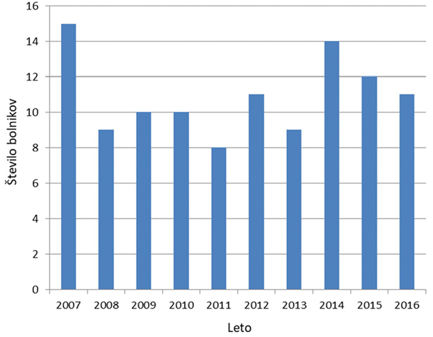
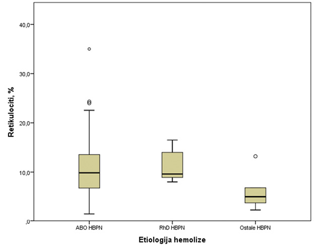
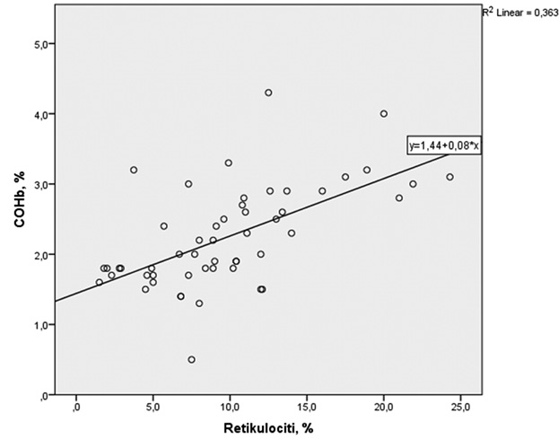

Hemolitična bolezen ploda in novorojenčka; pregledni članek in značilnosti bolnikov, hospitaliziranih na Kliničnem oddelku za neonatologijo med letoma 2007 in 2016
Haemolytic disease of the foetus and newborn: review article and a retrospective analysis of patients hospitalised at a tertiary neonatal centre during 2007–2016
Izvleček
Hemolitična bolezen ploda in novorojenčka (HBPN) nastane zaradi vezave aloimunskih protiteles na otrokove eritrocitne antigene, kar povzroči razpad eritrocitov ter nastanek hiperbilirubinemije in anemije novorojenčka. Aloimunska protitelesa, ki prehajajo preko posteljice iz materinega v plodov krvni obtok, so lahko naravno prisotna protitelesa anti-A in anti-B ali pa redkeje prisotna protitelesa, ki nastanejo po izosenzibilizaciji matere na tuje eritrocitne antigene, kot so protitelesa anti-D. Do izosenzibilizacije matere lahko pride ob transfuziji eritrocitov ali med nosečnostjo. HBPN zaradi protiteles anti-A in anti-B (HBPN AB0) lahko poteka z blago hiperbilirubinemijo in anemijo ali pa huje, z visoko hiperbilirubinemijo in izrazito anemijo, tako da je potrebna izmenjalna transfuzija krvi novorojenčka. HBPN zaradi protiteles anti-D je zaradi učinkovitega programa zaščite RhD negativnih nosečnic z imunoglobulini anti-D danes redka bolezen, njen potek pa v primerjavi s HBPN AB0 hujši.
V prvem delu prispevka opišemo patofiziologijo, klinično sliko, diagnosticiranje, zdravljenje in preventivo HBPN. V drugem delu prispevka predstavljamo rezultate kohortne retrospektivne analize 109 bolnikov s HBPN, hospitaliziranih na Kliničnem oddelku za neonatologijo med januarjem 2007 in decembrom 2016. V 84,4 % so HBPN povzročila protitelesa anti-A ali anti-B, v 9,2 % protitelesa anti-D in v 6,4 % ostala, redkejša protitelesa. Bolniki s HBPN, povzročeno z različnimi protitelesi, se v rezultatih hematoloških preiskav niso statistično značilno razlikovali. Pozitiven direktni Coombsov test so imeli vsi novorojenčki s HBPN RhD in le 64 % novorojenčkov s HBPN AB0. Vsi bolniki s HBPN RhD so potrebovali izmenjalno transfuzijo ali znotrajmaternično transfuzijo.
Abstract
Haemolytic disease of the foetus and newborn (HDFN) occurs when maternal alloimmune antibodies cross the placenta to the foetal circulation and cause destruction of erythrocytes, resulting in anaemia and hyperbilirubinemia. It can result from naturally present antibodies, such as anti-A and anti-B antibodies, or isoantibodies produced by women previously sensitised during pregnancy or transfusion of incompatible erythrocytes such as anti-D antibodies. RhD antigen is the most immunogenic and causes severe HDFN, while the spectrum of HDFN due to AB0 incompatibility ranges from subclinical to severe, requiring exchange transfusion. Thanks to effective and widely implemented prophylaxis with administration of anti-D immunoglobulin to RhD negative women, the HDFN due to anti-D is nowadays a rare disease.
Present paper provides an overview on the pathophysiology, clinical characteristics, diagnostics, treatment and prevention of HDFN. In the second part of the article we present the results of a cohort retrospective analysis of 109 patients with HDFN hospitalised at the tertiary neonatal unit during 2007–2016. In 84.4 % of cases the underlying cause of HDFN were antibodies anti-A or anti-B, in 9.2 % of cases antibodies anti-D and in 6.4 % other more rare antibodies. HDFN caused by different antibodies did not result in statistically significant differences in the evaluated hematological tests. Direct Coombs test was positive in all patients with HDFN RhD and in 64 % of newborns with HDFN AB0. All patients with HDFN RhD required exchange transfusion or intrauterine transfusion.
1 Uvod
Hemolitična bolezen ploda in novorojenčka (HBPN) je stanje, ki nastane zaradi imunsko pogojenega razpada rdečih krvnih celic ploda in novorojenčka, kar ima za posledico razvoj anemije in zlatenice pri novorojenčku (1). Čeprav je zlatenica najpogostejše klinično stanje, s katerim se srečujemo v neonatologiji (2), je pojavnost HBPN sorazmerno nizka. Po podatkih Perinatalnega informacijskega sistema je imelo leta 2016 ob odpustu iz porodnišnice odpustno diagnozo zlatenica 2.817 otrok, HBPN pa 181 otrok. Pojavnost zlatenice je bila leta 2016 v Sloveniji torej 140 na 1.000 živorojenih otrok, pojavnost HBPN pa 9 na 1.000 živorojenih otrok (3).
V prvem delu prispevka opisujemo patogenezo, klinično sliko in zdravljenje HBPN ter preprečevanju HBPN zaradi neskladja v krvni skupini RhD med materjo in otrokom. V drugem delu predstavljamo rezultate retrospektivnega pregleda etiologije, klinične slike in terapije otrok s HBPN, hospitaliziranih na Kliničnem oddelku za neonatologijo Pediatrične klinike Univerzitetnega kliničnega centra Ljubljana (KONEO).
2 Patofiziologija in etiologija
Razpad novorojenčkovih eritrocitov je pri HBPN imunsko pogojen in ga povzročijo materina aloimunska protitelesa razreda IgG, ki prehajajo iz materinega krvnega obtoka preko posteljice v plodov krvni obtok. V primeru neskladja v krvnih skupinah med materjo in otrokom se materina eritrocitna protitelesa vežejo na plodove, kasneje pa na novorojenčkove eritrocitne antigene, ki jih je podedoval od očeta. Preko posteljice lahko prehajajo tako naravno navzoča protitelesa IgG anti-A in anti-B, kot tudi protitelesa, ki nastanejo po izosenzibilizaciji matere na plodove eritrocitne antigene ali krvodajalčeve eritrocitne antigene ob predhodnih transfuzijah (4).
Do izosenzibilizacije matere na plodove eritrocitne antigene pride po vdoru plodovih eritrocitov v materin krvni obtok po fetomaternalni krvavitvi ali ob porodu, splavu, amniocentezi in drugih posegih med nosečnostjo. V primeru neskladja med krvnimi skupinami ploda in matere začne materin imunski sistem sprva tvoriti imunoglobuline razreda IgM. Protitelesa IgM ne prehajajo preko posteljice, zato običajno prva nosečnost, med katero pride do izosenzibilizacije, poteka brez težav. Ob izosenzibilizaciji nastanejo spominski limfociti B, ki so ob drugem stiku z antigenom, največkrat v eni od naslednjih nosečnosti, sposobni tvoriti imunoglobuline razreda IgG, ki prehajajo preko posteljice in se vežejo na plodove, kasneje pa na novorojenčkove eritrocite. S protitelesi opsonizirane eritrocite nato odstranjujejo makrofagi v retikuloendotelnem sistemu in s tem bistveno skrajšajo njihovo življenjsko dobo. To ima za posledico nastanek anemije in tvorbo bilirubina (4,5).
Do fetomaternalne krvavitve, potrjene s Kleihauer-Betkejevim testom, pride v do 71 % nosečnosti (6). Verjetnost in tudi količina fetomaternalne krvavitve naraščata z daljšanjem gestacijske starosti in je najpogostejša v zadnjem trimesečju nosečnosti (7 % v prvem trimesečju, nato 16 % in 29 %) (5). Pri močno imunogenih antigenih, npr. anti-D, je za izosenzibilizacijo dovolj že zelo majhna količina krvi, kot je 0,1–1 ml (5,7).
HBPN lahko nastane zaradi neskladja v več kot 50 različnih eritrocitnih antigenih (Tabela 1) (4,8). V razvitem svetu je najpogostejši vzrok HBPN neskladje v sistemu krvnih skupin AB0 (HBPN AB0). V skoraj vseh primerih ima mati krvno skupino 0; otrok najpogosteje krvno skupino A, lahko tudi B. Neskladje v sistemu AB0 med materjo in otrokom je prisotno v kar 15–25 % nosečnosti, vendar se HBPN razvije le pri manjšini (1:150 do 1:3000) (9). Naravno prisotna protitelesa sistema AB0 (anti-A in anti-B) so namreč večinoma skupine IgM, ki ne prehajajo preko posteljice, protitelesa skupine IgG pa so prisotna v manjši meri. Ta lahko nastanejo kot posledica izpostavljenosti nekaterim podobnim okoljskim antigenom v hrani, bakterijah in virusih, zato HBPN AB0 lahko prizadene tudi otroka po prvi materini nosečnosti (9) (Tabela 1).
|
Hudo obliko HBPN |
|
Anti-D, -c, -C in -E, anti-K in -k, anti-Jsb, anti-Fya, anti-M, anti-S, anti-U |
|
Blago in zmerno obliko HBPN |
|
anti-A in -B, anti-Kpa, anti-Kpb, anti-LW, anti-Jka, anti-Jkb, anti-Jsa, anti-Ula, anti-Fy3 |
|
Običajno ne povzročajo težav |
|
Anti-Fyb, anti-N, anti-s, anti-P1, anti-Lea, anti-Leb, anti-Lua, anti-Lub |
Najhujšo obliko HBPN povzroča neskladje v sistemu krvnih skupin Rh (anti-D, -c, -C, -E) (HBPN RhD) (10). Za razvoj bolezenskih znakov je potrebna predhodna izosenzibilizacija matere. Pri novorojenčku matere, ki je senzibilizirana, se v primeru neskladja v krvnih skupinah med materjo in novorojenčkom zagotovo razvije HBPN. Resnost bolezni se stopnjuje z vsako naslednjo nosečnostjo. Antigen D je najbolj imunogen, brez zaščite z imunoglobulini anti-D (Ig anti-D) se senzibilizira 16 % D-negativnih nosečnic, ki rodijo D-pozitivnega otroka (7,9). Hude oblike bolezni so možne tudi pri neskladju v krvni skupini Kell (anti-K). HBPN zaradi protiteles anti-K nastane zaradi hemolitičnega delovanja protiteles na rdeče krvne celice kot tudi zaviranja eritropoeze, saj je antigen Kell izražen že na eritroidnih progenitornih celicah. To povzroči predvsem hudo anemijo, ki je pogosto prisotna že pri plodu in manj izrazito hiperbilirubinemijo, saj zgodnji eritroidni prekurzorji še ne vsebujejo hemoglobina (8).
3 Klinična slika
Klinična slika HBPN je raznolika; od blage, le laboratorijsko zaznavne anemije in hiperbilirubinemije, do hude anemije in visoke hiperbilirubinemije. Kolikor je hiperbilirubinemija zelo visoka, ima lahko novorojenček znake akutne bilirubinske encefalopatije, ki nastane zaradi nevrotoksičnega učinka bilirubina na novorojenčkove možgane. V tem primeru je novorojenček zaspan, cvileče joče, sili v opistotonus, ima motnje mišičnega tonusa, povišano telesno temperaturo, v hudih primerih tudi možganske napade, nastopi pa lahko celo smrt (4,11).
Pri hemolitični bolezni zaradi visoko imunogenih protiteles, kot so protitelesa anti-D, se lahko huda anemija razvije že med nosečnostjo, kar vodi v okvaro ploda – hidrops (otekanje telesa in nabiranje tekočin v telesnih votlinah, hepatosplenomegalija, srčno popuščanje) in smrt ploda. Nosečnost, med katero pride do izosenzibilizacije proti antigenu D, in njen poporodni potek običajno potekata brez težav. Hemolitična bolezen se razvije v eni naslednjih nosečnosti, kolikor se krvni skupini matere in otroka ne skladata (12).
Klinična slika je pri HBPN AB0 običajno manj resna; novorojenček ima pogosto le blago hiperbilirubinemijo, anemija pa je manj značilna. Predhodna senzibilizacija ni potrebna, zato lahko prizadene tudi prvorojence (12).
Na HBPN običajno pomislimo, ko se zlatenica novorojenčka pojavi zgodaj po rojstvu, hiperbilirubinemija pa je visoka in hitro narašča. Pojav HBPN lahko tudi pričakujemo, in sicer pri novorojenčkih, katerih materam so v nosečnosti določili pozitiven indirektni Coombsov test (ICT), kar vedno opravimo v prvi tretjini nosečnosti, protitelesa pa so usmerjena proti novorojenčkovim antigenom, ki jih je podedoval od očeta (4).
4 Diagnosticiranje
Ob kliničnem sumu na HBPN opravimo laboratorijske preiskave za potrditev hemolitičnega dogajanja in transfuzijske preiskave za potrditev aloimunega vzroka hemolize.
Za potrditev hemolitičnega dogajanja uporabljamo pri novorojenčku dve skupini preiskav; preiskave, ki potrjujejo povečan razpad eritrocitov oz. povečan metabolizem hemoglobina, in preiskave, ki potrjujejo kompenzacijsko povečano nastajanje eritrocitov (13). Med prve prištevamo določitev koncentracije hemoglobina in nekonjugiranega bilirubina, meritev ogljikovega monoksida (CO) v izdihanem zraku
Za potrditev imunskega vzroka hemolize opravimo specifične transfuzijske preiskave. Pri materi krvno skupino in ICT, pri otroku pa krvno skupino in direktni Coombsov test (DCT). Krvne skupine otroka in matere se pri HBPN seveda razlikujejo, medtem ko sta ICT in DCT lahko pozitivna ali negativna. Pri pozitivnih Coombsovih testih opravimo specifikacijo protiteles, kar nam pojasni etiologijo HBPN. V primeru neskladja AB0 je ICT negativen, saj HBPN v tem primeru povzročajo naravno prisotna protitelesa. Prav tako pa je lahko v primeru HBPN AB0 negativen tudi DCT (4). V raziskavi Herchel et al je bila občutljivost DCT za potrditev hemolize 38,5 %, specifičnost 98,5 %, pozitivna napovedna vrednost pa 59 % (18). Pozitivna napovedna vrednost DCT za fototerapijo pa je nižja in sicer 13,5–23 % (15). Negativen izvid DCT je pri HBPN AB0 posledica manjšega števila antigenov na novorojenčkovih eritrocitih ali slabše afinitete protiteles v pogojih reakcije (10), zato ob sumu na HBPN AB0 opravimo še elucijo novorojenčkovih eritrocitov po Luiju. Zaradi istega razloga pri HBPN AB0 v krvnem razmazu pogosto beležimo sferocite. Eritrociti, ki so opsonizirani s protitelesi anti-A ali anti-B, so izpostavljeni delovanju makrofagov, ki pa zaradi maloštevilčnosti imunoglobulinov na površini celice ne sprožijo popolne odstranitve eritrocita, ampak le dela membrane, kar povzroči spremembo njegove oblike (9).
5 Zdravljenje
Zdravljenje HBPN je v prvi vrsti usmerjeno k zniževanju hiperbilirubinemije (19). Visoke vrednosti nekonjugiranega bilirubina so za novorojenčke nevarne. Nekonjugirani bilirubin prehaja krvno-možgansko pregrado in se nalaga v nevrone predvsem bazalnih ganglijev, hipokampusa, substance nigre ter jeder možganskih živcev in možganskega debla, kjer deluje nevrotoksično in povzroča klinično sliko akutne bilirubinske encefalopatije ter pri nepovratni okvari tudi kronično bilirubinsko encefalopatijo (11,20). Številni epidemiološki podatki kažejo, da je v prisotnosti hemolize bilirubin bolj toksičen, zato se hemoliza pri novorojenčkih z zlatenico opredeljuje kot nevrotoksični dejavnik tveganja za razvoj bilirubinske encefalopatije (19,20,21). Z zdravljenjem hiperbilirubinemije zato v prisotnosti hemolize pričnemo pri nižjih vrednostih bilirubina (19,22).
Zdravljenje začnemo z intenzivno fototerapijo. Pod vplivom svetlobne energije bilirubin preide številne fotokemične reakcije, tako da nastanejo stereoizomere bilirubina in brezbarvni derivati nižje molekulske mase. Nastale molekule so vodotopne in se lahko izločijo iz telesa z žolčem in urinom tudi ob fiziološko slabši konjugaciji bilirubina pri novorojenčku. Pri fototerapiji uporabljamo pretežno modro svetlobo valovne dolžine med 460 in 490 nm, saj je penetracija skozi tkiva in absorpcija bilirubina pri tej valovni dolžini najboljša (23).
Pri hudih oblikah HBPN, ko z intenzivno fototerapijo ne uspemo znižati vrednosti bilirubina in je običajno prisotna tudi anemija, je potrebno zdravljenje z izmenjalno transfuzijo (IT) (19). V nekaterih primerih, ko se huda anemija pojavi že med nosečnostjo, pa je indicirana tudi znotrajmaternična transfuzija (ZMT) (24). Čeprav je ZMT tvegan poseg, je preživetje plodov po ZMT danes več kot 90 % (25). Pri novorojenčku, ki je potreboval ZMT in ima ob rojstvu vrednost hemoglobina popkovnične krvi manj kot 100 g/l in bilirubina več kot 90 mmol/l, je na mestu zgodnja IT, saj samo fototerapija običajno ne zadošča (26). Pri odločitvi o zgodnji IT je pomemben tudi podatek o času zadnje znotrajmaternične transfuzije in deležu fetalnih eritrocitov v krvi. Nekateri otroci namreč potrebujejo le intenzivno fototerapijo in običajno transfuzijo krvi (26).
Čeprav je bila pred uvedbo fototerapije v 70. letih prejšnjega stol. IT edini način zdravljenja HBPN, je IT danes redek poseg. Po podatkih Perinatalnega informacijskega sistema je imelo v 5- letnem obdobju, od leta 2012 do 2016, IT v povprečju 8 otrok vsako leto. (3).
HBPN lahko zdravimo tudi z intravenskimi imunoglobulini (IVIG). Ameriška akademija za pediatrijo svetuje uporabo IVIG, kolikor je vrednost bilirubina blizu vrednosti, pri kateri je potrebna IT ali s fototerapijo ne uspemo preprečiti naraščanja koncentracije bilirubina (19). Pred kratkim objavljena metaanaliza, ki je vključila 12 randomiziranih kliničnih raziskav, v katerih so preučevali učinkovitost zdravljenja HBPN z IVIG za znižanje potrebe po IT, je pokazala, da IVIG niso prepričljivo učinkoviti pri znižanju potrebe po IT pri HBPN RhD, medtem ko njihova vloga pri znižanju potrebe po IT pri HBPN AB0 ni jasna (27).
6 Preventiva
Zaradi resnosti HBPN je po svetu uveljavljen program zaščite D-negativnih nosečnic z Ig anti-D. V Sloveniji so poporodno zaščito z Ig anti-D uvedli leta 1970, od leta 1993 pa se v okviru nacionalnega programa prenatalne zaščite izvaja tudi predporodno testiranje nosečnic in zaščita z Ig anti-D v 28. tednu nosečnosti (8).
Da bi preprečili HBPN, se v okviru nacionalnega programa prenatalne zaščite vsem nosečnicam določi krvna skupina (AB0, D, Kell) in jih testira na prisotnost morebitnih eritrocitnih aloprotiteles. Vsem D-negativnim nosečnicam, ki nimajo protiteles anti-D, v 28. tednu nosečnosti vbrizgamo preventivni odmerek Ig anti-D, s čimer preprečimo večino morebitnih izosenzibilizacij (8). Tako dobijo zaščito tudi tiste D-negativne nosečnice, ki nosijo D-negativen plod, in je torej ne bi potrebovale. Z novimi metodami genotipizacije plodove DNK, ki je raztopljena v materini periferni krvi, je danes mogoče dovolj zanesljivo določiti plodov antigen D, kar omogoča ciljano zaščito z Ig anti-D samo tistih D-negativnih nosečnic, ki dejansko nosijo D-pozitivni plod (8,28). Zdravstveni svet MZ je nov program prenatalne zaščite D-negativnih nosečnic, ki vključuje določitev plodovega antigena D iz plodove DNK, odobril, zakonodajalec pa je maja 2018 objavil Pravilnik o spremembah Pravilnika o transfuzijskih preiskavah in postopkih ob transfuziji (Uradni list RS, št. 32/18), ki je osnova za izvedbo novega programa v praksi.
7 Značilnosti otrok s hemolitično boleznijo novorojenčka, zdravljenih na Kliničnem oddelku za neonatologijo med letoma 2007 in 2016
7.1 Namen
Ugotoviti etiologijo, klinično sliko in način zdravljenja novorojenčkov s HBPN hospitaliziranih na Kliničnem oddelku za neonatologijo (KONEO) med letoma 2007 in 2016.
7.2 Metode
V retrospektivno kohortno analizo smo vključili vse novorojenčke, ki so bili hospitalizirani na KONEO zaradi imunsko pogojene hemolize od januarja 2007 do decembra 2016. Diagnoza HBPN je bila postavljena na osnovi neposrednih laboratorijskih znakov hemolize (zlatenica in padec vrednosti hemoglobina ali anemija ali retikulocitoza) in pozitivnega DCT ali elucije novorojenčkovih eritrocitov po Luiju. Novorojenčki z neimunsko hemolizo in novorojenčki s pozitivnim DCT brez znakov hemolize v analizo niso bili vključeni.
Preučevano skupino smo razdelili v podskupine glede na vzrok hemolize: HBPN zaradi AB0 neskladja (HBPN AB0), HBPN zaradi RhD neskladja (HBPN RhD) in HBPN zaradi drugih, manj pogostih protiteles. Analizirali smo osnovne demografske (spol, gestacijska starost) in perinatalne podatke (porodna teža, način poroda, ocena po Apgarjevi 1 in 5 minut po rojstvu), vrednosti laboratorijskih hematoloških preiskav in bilirubina, rezultate ICT pri materi, DCT pri otroku in elucije po Lui ter terapevtske ukrepe. Statistično obdelavo podatkov smo opravili s statističnim paketom IBM SPSS Statistics, različica 21 (IBM Corporation, Armonk, ZDA). Vzorec smo predstavili z osnovnimi opisnimi statistikami (delež, aritmetična sredina in standardni odklon, mediana). Za primerjavo povprečij v podskupinah smo uporabili analizo variance, v primeru asimetrične porazdelitve pa Kruskal-Wallisov test za primerjavo porazdelitev med skupinami. Za primerjavo deležev v podskupinah smo uporabili Fisherjev eksaktni test. Za statistično pomembno razliko smo upoštevali vrednost p < 0,05.
Izvedbo raziskave je odobrila Komisije Republike Slovenije za medicinsko etiko (št. soglasja 0120–602/2017).
7.3 Rezultati
Med januarjem 2007 in decembrom 2016 je bilo na KONEO hospitaliziranih 109 novorojenčkov s HBPN, 46 (42 %) dečkov in 63 (58 %) deklic. Število otrok s HBPN po posameznih letih predstavlja Slika 1.

92 (84,4 %) novorojenčkov je imelo HBPN zaradi neskladja v sistemu krvnih skupin AB0, 10 (9,2 %) zaradi neskladja v RhD, preostalih 7 (6,4 %) zaradi neskladja v nizkofrekvenčnih antigenih (Tabela 2).
|
Protitelesa |
Št. otrok N |
Delež % |
|
Anti-A |
67 |
61,5 |
|
Anti-B |
25 |
23 |
|
Anti-D |
6 |
5,5 |
|
Anti-C |
3 |
3 |
|
Anti-D in C |
4 |
4 |
|
Anti-c in E |
2 |
1,5 |
|
Anti- Cw |
2 |
1,5 |
|
Skupaj |
109 |
100 |
Povprečna gestacijska starost otrok je bila 38,8 (SD 1,5) tednov, povprečna porodna teža 3360 g (SD 510). Večina (n = 89) otrok je bila rojenih vaginalno, v 19 primerih je bil opravljen carski rez, vakuumsko ekstrakcijo ali kleščni porod je imelo 4 otrok, za enega otroka podatek o načinu poroda v dokumentaciji ni bil zabeležen. Mediana ocene po Apgarjevi lestvici 1 minuto po rojstvu je bila 9 (min = 4, max = 10). Mediana ocene po Apgarjevi lestvici 5 minut po rojstvu je prav tako znašala 9 (min = 6, max = 10). Osnovni demografski in perinatalni podatki, razen porodne teže, se med podskupinami otrok, razdeljenih glede na vzrok hemolize, niso razlikovali. Porodna teža otrok s HBPN RhD je bila statistično značilno nižja od porodne teže otrok s HBPN AB0 in s HBPN zaradi drugih redkejših antigenov (2850 g vs 3420 g vs 3320 g, p = 0,003).
Pri HBPN zaradi neskladja v sistemu krvnih skupin RhD je bil ICT matere po rojstvu in DCT otroka vedno pozitiven. V primeru HBPN zaradi neskladja v AB0 je bil DCT pozitiven pri 59 (64 %) novorojenčkih, negativen pri 32 (35 %), za 1 (1 %) nimamo podatka. Razlika v deležu otrok s pozitivnim DCT med skupinami je bila statistično značilna (p = 0,012).
Hematološke vrednosti, izvidi transfuzijskih preiskav in delež otrok s COHb > 1,7 % za posamezne podskupine so predstavljeni v Tabeli 3. Omenjeni parametri se, razen deleža otrok s pozitivnim DCT, v podskupinah statistično značilno ne razlikujejo. Sferociti so bili zaznani pri 38 % otrok s HBPN AB0, medtem ko jih pri otrocih s HBPN RhD nismo zaznali. Eritroblasti so bili pogosteje prisotni pri otrocih s HBPN RhD in drugimi redkejšimi protitelesi kot pri otrocih s HBPN AB0 (100 % vs. 60 % in 36 %), vendar se deleži in mediane vrednosti števila eritroblastov med skupinami statistično značilno ne razlikujejo. Mediana vrednost retikulocitov (Slika 2) in delež otrok s povišanimi retikulociti sta v skupini HBPN AB0 višja, vendar razlike med skupinami niso statistično značilne.

|
ABO HBPN |
RhD HBPN |
Ostale HBPN |
Skupaj |
Statistični test |
|||||
|
F |
% |
f |
% |
f |
% |
f |
% |
vrednost p |
|
|
Hb < 10P n = 108 |
49 |
54 |
9 |
90 |
4 |
57 |
62 |
57 |
Fisherjev test 0,090 |
|
Padec Hb n = 105 |
48 |
54 |
5 |
56 |
3 |
43 |
56 |
53 |
Fisherjev test 0,920 |
|
Povišani Rtc n = 102 |
74 |
84 |
6 |
75 |
3 |
50 |
83 |
81 |
Fisherjev test 0,087 |
|
Prisotnost Sfero n = 93 |
30 |
38 |
0 |
0 |
1 |
20 |
31 |
33 |
Fisherjev test 0,072 |
|
Prisotnost Eritrob n = 94 |
30 |
36 |
3 |
60 |
3 |
100 |
36 |
38 |
Fisherjev test 0,476 |
|
Pozitiven DCT n = 107 |
59 |
64 |
10 |
100 |
6 |
100 |
75 |
70 |
Fisherjev test 0,012 |
|
COHb > 1,7 % n = 56 |
38 |
79 |
4 |
100 |
3 |
75 |
45 |
80 |
Fisherjev test 0,820 |
|
Mediana % Rtc |
9,8 (min = 1,5, max = 35) |
9,6 (min = 8, max = 16,5) |
5 (min = 2,3, max = 13,2) |
9,6 (min = 4,3, max = 13,2) |
Kruskal- Wallisov test 0,061 |
||||
|
Mediana št. eritroblastov |
3 (min = 0, max = 190) |
15 (min = 0, max = 19) |
1,5 (min = 0, max = 98) |
3 (min = 0, max = 190) |
Kruskal- Wallisov test 0,841 |
||||
|
Povprečni COHb (%) (SD) |
2,2 (0,76) |
2,17 (0,35) |
2,1 (0,8) |
2,2 (0,73) |
Analiza variance- F testa 0,993 |
||||
Hb – hemoglobin, Rtc – retikulociti, Sfero – sferociti, Eritrob – eritroblasti, DCT – direktni
Coombsov test, COHb – karboksihemoglobin, SD – standardni odklon,
n – velikost vzorca (število otrok, za katere je podatek znan), f – frekvenca (število otrok z določeno značilnostjo), a predpostavka o homogenosti je izpolnjena.
Povezanost med deležem retikulocitov in vrednostjo COHb je pozitivna (r = 0,603) in je prikazana na Sliki 3.
46 (50 %) novorojenčkov s HBPN AB0 je potrebovalo fototerapijo, 38 (41,3 %) jih je poleg fototerapije potrebovalo še IT, 3 (3,3 %) so poleg fototerapije prejeli transfuzijo koncentriranih eritrocitov (TKE), 2 (2,1 %) sta prejela samo TKE, 3 (3,3 %) novorojenčki terapije niso potrebovali. Med otroki, ki so prejeli fototerapijo in TKE, je bil eden zdravljen tudi z eritropoetinom. 8 (80 %) novorojenčkov s HBPN RhD je potrebovalo fototerapijo in IT, 2 (20 %) novorojenčka, ki sta prejela ZMT, sta po rojstvu potrebovala ali samo fototerapijo ali TKE. V skupini otrok s HBPN zaradi drugih, redkejših protiteles so 4 (57,1 %) otroci potrebovali samo fototerapijo, 2 (28,6 %) fototerapijo in IT, 1 otrok (14,3 %) terapije ni potreboval. Deleži otrok, ki so potrebovali samo fototerapijo ali fototerapijo in/ali dodatno terapijo, so se v podskupinah HBPN statistično značilno razlikovali (Fisherjev test, p = 0,004) (Tabela 4).
|
Zdravljenje |
ABO HBPN |
RhD HBPN |
Ostale HBPN |
Skupaj |
||||
|
n |
(%) |
n |
(%) |
n |
(%) |
n |
(%) |
|
|
Brez |
3 |
|
0 |
|
1 |
|
4 |
|
|
Fototerapija |
46 |
|
0 |
|
4 |
|
50 |
|
|
Fototerapija in/ali druga terapija∆ |
43 |
|
10 |
|
2 |
|
55 |
|
|
Skupaj |
92 |
|
10 |
|
7 |
|
109 |
|
∆ Druga terapija: izmenjalna transfuzija, transfuzija koncentriranih eritrocitov, znotrajmaternična transfuzija.
7.4 Razpravljanje
Rezultati retrospektivne kohortne raziskave o značilnostih bolnikov s HBPN, hospitaliziranih na KONEO v 10-letnem obdobju so pokazali, da je bilo neskladje v sistemu krvnih skupin AB0 najpogostejši vzrok HBPN. O podobnih rezultatih o etiologiji HBPN v sodobnem času poročajo tudi drugi raziskovalci (12,28).
Čeprav so bolezenski znaki HBPN zaradi RhD neskladja hujši, lahko tudi HBPN AB0 poteka s hudo hemolizo, ki povzroči visoko hiperbilirubinemijo in anemijo, tako da je potrebna IT. Tudi rezultati naše analize kažejo, da je bil potek HBPN RhD pri naših bolnikih hujši, saj so vsi otroci s HBPN RhD potrebovali IT ali ZMT, poleg tega pa je bil delež otrok z anemijo (Hb < 10P) in eritroblastozo v tej skupini večji, čeprav razlike niso bile statistično značilne. Kljub temu, da HBPN AB0 poteka praviloma lažje, je bil delež otrok, ki so potrebovali IT, v skupini HBPN AB0 zelo visok (41,5 %) in višji, kot ga navajajo v drugih raziskavah (29,30,31). Razlog za to je najverjetneje v bolnikih, ki so tvorili našo kohorto. Na KONEO so namreč premeščeni otroci s HBPN, ki bi potencialno potrebovali IT, iz cele Slovenije, saj se poseg izvaja samo v nekaj specializiranih centrih. Bolniki s HBPN AB0, hospitalizirani na KONEO, imajo zato najverjetneje hujšo obliko bolezni z izrazitejšo hemolizo kot splošna populacija otrok s HBPN AB0.
V skupini HBPN AB0 je imelo sferocitozo 36 % otrok, medtem ko otroci v skupini HBPN RhD sferocitov niso imeli. Pojav sferocitov pri hemolitičnem dogajanju in aktiviranju kostnega mozga ni nenavaden in ne pomeni, da ima bolnik dedno sferocitozo. Kljub temu pa je najdba sferocitov pri novorojenčku s hemolizo lahko diagnostična dilema. Dedna sferocitoza je namreč diferencialna diagnoza HBPN, saj se v novorojenčkovem obdobju kaže s hudo zlatenico in razpadom rdečih krvnih celic, pozitivna družinska anamneza za dedno sferocitozo pa je v primeru nove mutacije ali recesivnega dedovanja odsotna. Pri razločevanju med obema boleznima nam je v pomoč DCT, ki je pri dedni sferocitozi vedno negativen, pri neskladju AB0 pa je DCT pozitiven pri 26 % novorojenčkov s pomembno hiperbilirubinemijo (32). V naši kohorti je imelo pozitiven DCT 64 % otrok s HBPN AB0.
Pri hemolizi in posledični razgradnji hema poleg bilirubina nastaja CO, ki se veže na Hb in tvori COHb. Rezultati naše prejšnje raziskave o pomenu COHb za dokaz hemolize pri HBPN AB0 so pokazali, da je verjetnost hemolitičnega dogajanja zelo visoka, če je COHb nad 1,7 % (15). Podatek o vrednosti COHb je bil na voljo za polovico otrok. Vrednost COHb > 1,7 % je imelo 80 % otrok in vsi, ki so potrebovali IT. Povprečna vrednost COHb v vseh treh skupinah je bila povišana in je znašala 2,2 %. Ker je COHb neposreden kazalnik hemolize in nastajanja bilirubina, bi pričakovali, da je vrednost COHb višja pri višji stopnji hemolitičnega dogajanja. To neposredno potrjuje višja vrednost COHb pri otrocih, ki potrebujejo IT (15). V naši raziskavi so imeli otroci z višjo retikulocitozo, ki jo pričakujemo pri večjem padcu Hb in hujši hemolizi, tudi višje vrednosti COHb (Slika 3).

Regresijski koeficient = 0,082, p < 0,0005
Koeficient korelacije = 0,603, p < 0,0005
8 Zaključek
Čeprav je HBPN RhD zaradi učinkovitega programa zaščite D-negativnih nosečnic z Ig anti-D redka bolezen, je pojavnost HBPN sorazmerno visoka. V Sloveniji v petletnem obdobju (2012–2016) znaša 7,3–10/1.000 živorojenih otrok. Pregled bolnikov s HBPN, hospitaliziranih na KONEO, je pokazal, da je tudi med našimi bolniki najpogostejši razlog za HBPN neskladje v sistemu krvnih skupin AB0. HBPN AB0 velja za manj hudo bolezen, vendar je bil delež otrok s HBPN AB0 v naši skupini, ki so potrebovali IT, visok, saj je KONEO referenčni slovenski center za izvajanje IT. Delež otrok s HBPN RhD je bil v naši skupini sorazmerno nizek, pregled kliničnih podatkov pa je pokazal, da je bil klinični potek HBPN zaradi protiteles anti-D pri naših bolnikih hujši.
Pridobljeni podatki potrjujejo, da moramo biti pri obravnavi novorojenčkov z zlatenico kljub nizki pojavnosti HBPN RhD pozorni, saj huda zlatenica ogroža tudi novorojenčke z drugimi oblikami HBPN, ki so bolj pogoste. Pri njih je lahko zdravljenje s fototerapijo premalo učinkovito za znižanje ravni bilirubina, tako da potrebujejo IT, kar v našem okolju pomeni premestitev bolnika v neonatalni referenčni center.